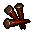

Bloody nails
| This article is a stub. You can help Graveyard Keeper Wiki by expanding it. |
| Bloody nails | |
|---|---|
 | |
General Information
| |
Stack size:
|
100 |
Source(s)
| |
| Dungeon | |
Quest Related NPCs
| |
| Snake | |

The bloody nails are a quest item dropped by iron maidens in the dungeon. The player needs to deliver 5x to Snake upon request. Alternatively, they can simply be washed at the cooking table to create ordinary nails.
Note that there are a finite number of bloody nails in the game, since iron maidens do not respawn; if you discard or wash all of them before delivering five to Snake, the game will become unwinnable.
Crafting
| Cooking table | |
|---|---|
| Item Produced | Required Materials |
| 1× Nails |
1× Bloody nails 1× River sand 1× Water |
| ||||||||